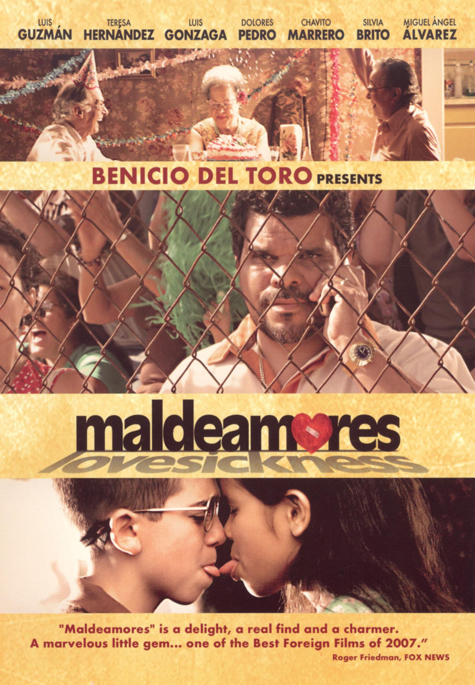
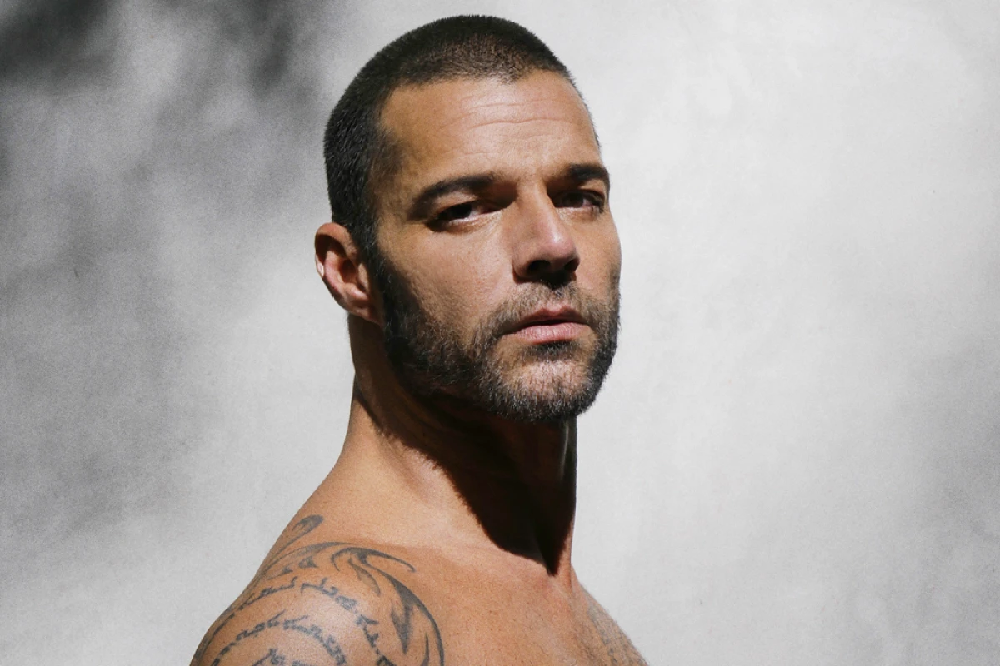

Costa Rica
Costa Rica Porto Rico
Porto RicoTelevisão
Os programas de televisão porto-riquenhos abrangem uma ampla gama de temas, como telenovelas, notícias, entretenimento, música, esportes, culinária, saúde, debates, educação, cultura, meio ambiente e estilo de vida. Essa variedade reflete os interesses e preocupações da população local, proporcionando uma programação diversificada que atende a diferentes gostos e necessidades de entretenimento e informação.
Alguns dos principais programas de televisão do Porto Rico
-
Raymond y sus Amigos
-
Univision
-
WIPR-TV (canal 6)

Cinema
A indústria cinematográfica em Porto Rico tem crescido nos últimos anos, explorando a rica cultura, história do país e desafios enfrentados pelos porto-riquenhos.
Os principais gêneros dos filmes porto-riquenhos incluem drama, comédia, documentário, romance e histórico. Esses gêneros abrangem uma variedade de temas e estilos cinematográficos que refletem a cultura e as preocupações da sociedade porto-riquenha.
Nos filmes de outros países, Porto Rico é frequentemente retratado como um cenário exótico com suas belas praias e cultura vibrante, ou destacado por sua rica cena musical, incluindo o reggaeton.
Um exemplo é o filme "Velozes e Furiosos", na qual a maioria das sequências foram gravadas no Porto Rico
Alguns dos principais filmes porto-riquenhos
-
200 Cartas (2013)
-
Maldeamores (2007)

Alguns atores e atrizes nascidos em Porto Rico que participaram de filmes e séries mundialmente conhecidos
-
Luis Guzmán
-
Roselyn Sánchez
-
Benicio del Toro
Música
A cultura porto-riquenha exerce uma influência abrangente na música de Porto Rico, permeando diversos gêneros. A fusão de heranças indígenas, africanas, espanholas e caribenhas é evidente na salsa, reggaeton, bomba e plena. Esses estilos refletem a identidade cultural da ilha e seus artistas notáveis, como Ricky Martin, Luis Fonsi e Daddy Yankee.
Alguns dos principais principais estilos musicais de Porto Rico são: regaaeton, bomba e plena.
-
Reggaeton
-
Bomba e Plena
Alguns dos cantores e bandas famosos atualmente
-
Bad Bunny

-
Ricky Martin
 -
Daddy Yankee
-
Luis Fonsi
Jornais
Os jornais porto-riquenhos abordam uma ampla gama de tópicos, incluindo política, economia, assuntos sociais, desenvolvimento, meio ambiente, crime, cultura, esportes, saúde, educação e eventos locais e nacionais. Eles fornecem cobertura detalhada sobre questões políticas e econômicas, refletem preocupações sociais, informam sobre avanços médicos e culturais, e mantêm os leitores atualizados sobre eventos esportivos e culturais.
Alguns dos jornais do Porto Rico
-
El Nuevo Día
-
Primera Hora
-
El Vocero